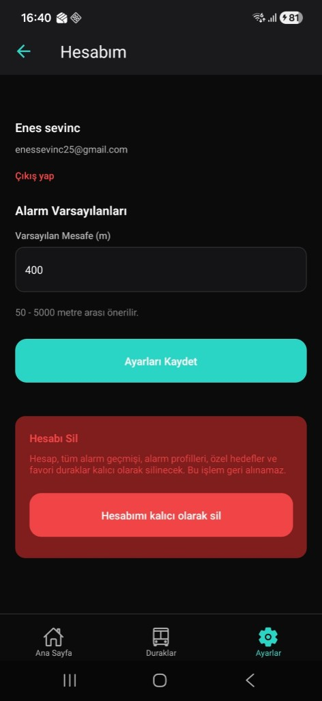
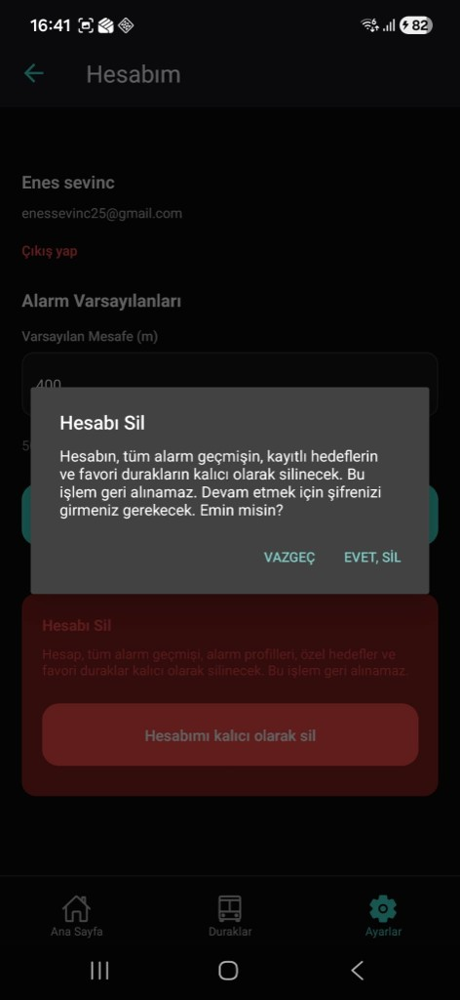
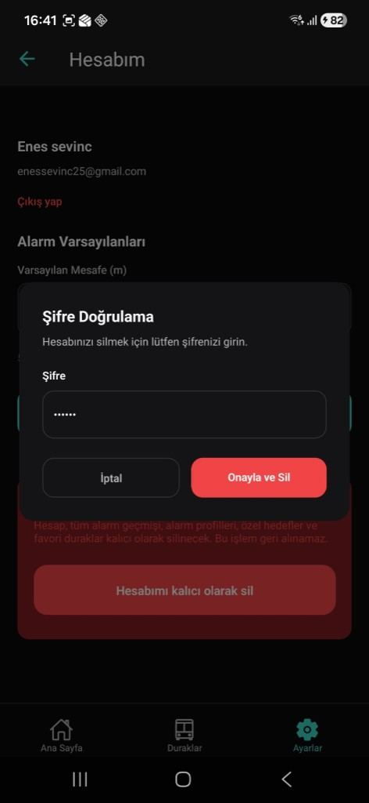
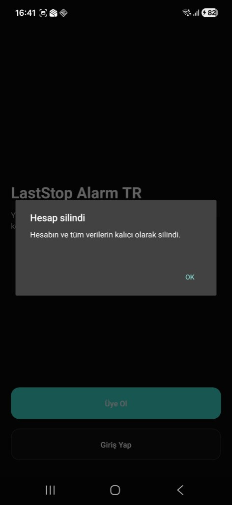

Durak Alarmı — Google Play Veri Güvenliği gereksinimi
Bu sayfa, Durak Alarmı uygulamasında hesabınızı ve tüm verilerinizi nasıl silebileceğinizi adım adım açıklar. Hesap silme işlemi geri alınamaz.
Hesabınızı sildiğinizde aşağıdaki veriler kalıcı olarak silinir:
Uygulama içinde Ayarlar sekmesine gidin, ardından Hesabım bölümünü açın. Bu ekranda adınız, e-posta adresiniz ve "Hesabı Sil" bölümü görünür.

"Hesabımı kalıcı olarak sil" butonuna tıkladığınızda bir onay penceresi açılır. Bu pencerede silinecek veriler özetlenir ve işlemin geri alınamayacağı belirtilir. Devam etmek için EVET, SİL butonuna basın.

Güvenlik için hesap şifrenizi girmeniz istenir. Şifrenizi yazın ve Onayla ve Sil butonuna basın.

Hesabınız ve tüm verileriniz kalıcı olarak silindi. "Hesap silindi" mesajı görüntülenir ve giriş ekranına yönlendirilirsiniz.

Uygulama içinden hesap silme işlemini gerçekleştiremiyorsanız, aşağıdaki e-posta adresine yazıp hesap silme talebinde bulunabilirsiniz. Talebinizde kayıtlı e-posta adresinizi belirtmeniz gerekmektedir.
Hesap silme işlemi tamamlandıktan sonra verileriniz Firebase sunucularından kaldırılır. Konum verileri uygulama tarafında saklanmadığı için ayrıca silinmesi gerekmez.